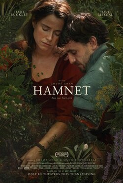

98th Annual Academy Awards
Melhor Produção de Arte
Conheça os candidatos à Premiação do Oscar 2026 por Melhor Produção de Arte.

Vencedor
Frankenstein
Designer de Produção: Tamara Deverell (colaboradora de longa data de Del Toro).
O Trabalho: A criação de laboratórios vitorianos repletos de vidrarias alquímicas, máquinas a vapor e uma anatomia arquitetônica sombria. O castelo e as paisagens góticas foram construídos com uma escala monumental.
Destaque: O contraste entre o luxo acadêmico de Genebra e a crueza visceral do laboratório onde a criatura ganha vida. Cada textura de parede e escolha de mobiliário exala uma sensação de "vida criada do nada".

Hamnet: A Vida Antes de Hamlet
Designer de Produção: Stephane Cressend.
O Trabalho: Uma recriação meticulosa da Stratford-upon-Avon do século XVI. O foco foi o naturalismo absoluto, utilizando materiais de construção da época, como madeira de carvalho, palha e lama.
Destaque: O interior da casa de Shakespeare, que evita o aspecto de "museu". O design foca no uso da luz natural através de janelas pequenas e na disposição de objetos que sugerem uma vida doméstica vibrante, porém marcada pela sombra da peste.

Marty Supreme
Designers de Produção: Adam Stockhausen (conhecido por seu trabalho com Wes Anderson).
O Trabalho: Uma visão estilizada e vibrante da Nova York dos anos 50. O design recria desde clubes de pingue-pongue esfumaçados até luxuosos apartamentos de meados do século, com uma paleta de cores saturada e precisa.
Destaque: A arena de competição de tênis de mesa, que transforma um esporte de nicho em um espetáculo cinematográfico através de um design de cenário que evoca a era de ouro de Hollywood com um toque de modernidade frenética.

Uma Batalha Após a Outra
Designer de Produção: Jack Fisk (lendário colaborador de PTA e Terrence Malick).
O Trabalho: Um design de produção de escala épica que recria ambientes urbanos da Califórnia contemporânea (e possivelmente um passado recente). Fisk é mestre em construir estruturas reais em vez de depender de CGI.
Destaque: A construção de complexos governamentais e cenários de rua que parecem ter existido por décadas. O design ajuda a ancorar a trama política e de ação em um realismo tátil e poeirento.

Pecadores (Sinners)
Designer de Produção: Hannah Beachler (vencedora do Oscar por Black Panther).
O Trabalho: A criação de uma cidade fictícia no sul dos Estados Unidos durante a era da depressão, imbuída de um terror gótico. As igrejas de madeira, as plantações e as casas isoladas foram desenhadas para parecerem ao mesmo tempo acolhedoras e ameaçadoras.
Destaque: A "geografia do medo". O design de Beachler utiliza simetrias perturbadoras e espaços que parecem esconder segredos nas sombras, elevando a tensão sobrenatural do roteiro de Ryan Coogler.